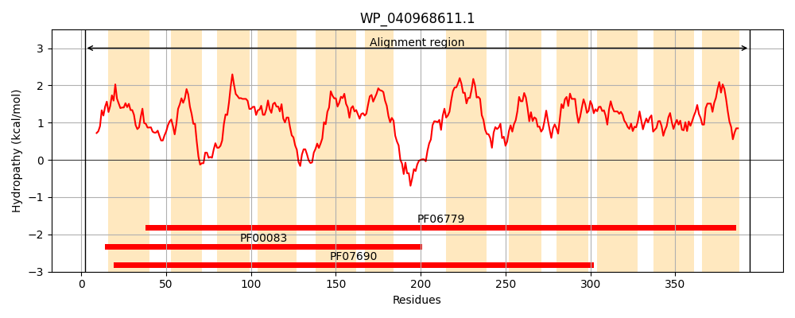
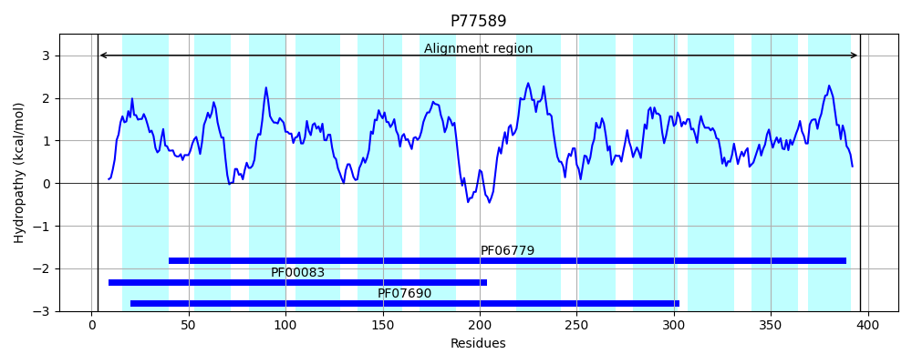
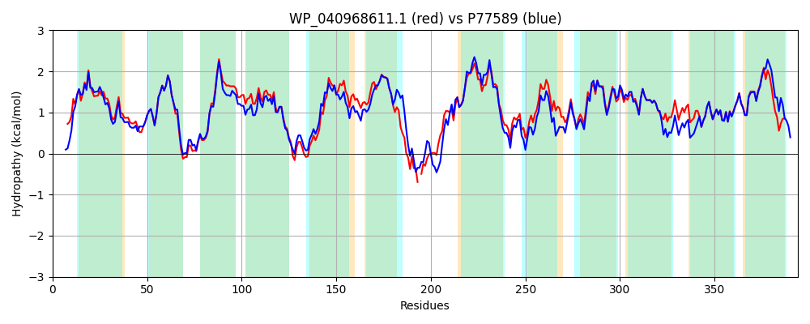

Hit Accession: P77589
Hit TCID: 2.A.1.15.2
Hit Description: gnl|BL_ORD_ID|11524 gnl|TC-DB|P77589|2.A.1.15.2 Putative 3-hydroxyphenylpropionic acid transporter - Escherichia coli.
Mach Len: 394
e:0.000000
Query TMS Count : 12
Hit TMS Count: 12
TMS-Overlap Score: 12.650000
Predicted Substrates:CHEBI:22599;arabinose
BLAST Alignment:
Score: 1612 , Bit scores: 625 bits, E-value: 0.0e+00, Alignment length: 394, Percentage identity: 81
Query: 2 TKITTANPSRLVVTIGLCFMVALMEGLDLQAAGIAAVGMAQAFALDKMQMGWIFSAGILGLLPGALVGGMLADRHGRKRILLGSVLLFGLFSLATAVAWSFPTLLLARLLTGVGLGAALPNLIALTSEAAGSRFRGRAVSLMYCGVPIGAALAAALGFSGLAAAWQTIFWIGGVVPLLLIPLLMRWLPESQAFQ-RAEASVPLRTLFAPGHAAATLLLWLGYFFTLLVVYMLINWLPMLLVGQGFRASQAAGVMFSLQIGAACGTLLLGALMDKLTPLRMSLLIYSGILASLLALGSASSLNGMLLAGFVAGLFATGGQSVLYALAPLFYPAAIRATGVGTAVAVGRLGAMSGPLLAGKMLALGTGTIGVMAASAPGIVLAGVAVFWLMHRQQR 394
T+ +++ SRL++TIGLCF+VALMEGLDLQAAGIAA G+AQAFALDKMQMGWIFSAGILGLLPGALVGGMLADR+GRKRIL+GSV LFGLFSLATA+AW FP+L+ ARL+TGVGLGAALPNLIALTSEAAG RFRG AVSLMYCGVPIGAALAA LGF+G AWQT+FW+GGVVPL+L+PLLMRWLPES F +++ PLR LFAP A ATLLLWL YFFTLLVVYMLINWLP+LLV QGF+ SQAAGVMF+LQ+GAA GTL+LGALMDKL P+ MSLLIYSG+LASLLALG+ SS NGMLLAGFVAGLFATGGQSVLYALAPLFY + IRATGVGTAVAVGRLGAMSGPLLAGKMLALGTGT+GVMAASAPGI++AG+AVF LM R+ R
Sbjct: 3 TRTPSSSSSRLMLTIGLCFLVALMEGLDLQAAGIAAGGIAQAFALDKMQMGWIFSAGILGLLPGALVGGMLADRYGRKRILIGSVALFGLFSLATAIAWDFPSLVFARLMTGVGLGAALPNLIALTSEAAGPRFRGTAVSLMYCGVPIGAALAATLGFAGANLAWQTVFWVGGVVPLILVPLLMRWLPESAVFAGEKQSAPPLRALFAPETATATLLLWLCYFFTLLVVYMLINWLPLLLVEQGFQPSQAAGVMFALQMGAASGTLMLGALMDKLRPVTMSLLIYSGMLASLLALGTVSSFNGMLLAGFVAGLFATGGQSVLYALAPLFYSSQIRATGVGTAVAVGRLGAMSGPLLAGKMLALGTGTVGVMAASAPGILVAGLAVFILMSRRSR 396 | Protein Hydropathy Plots: |
|---|
|  |  |
Pairwise Alignment-Hydropathy Plot:
|
|---|
|  |